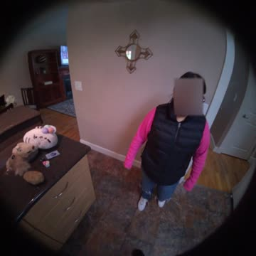
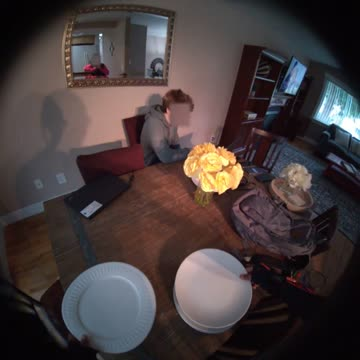
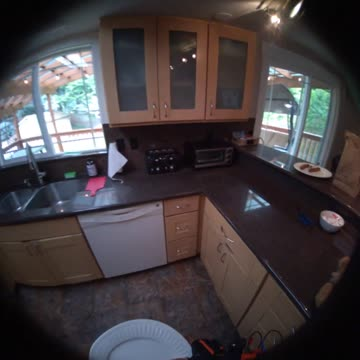
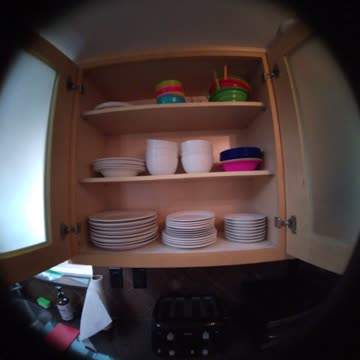
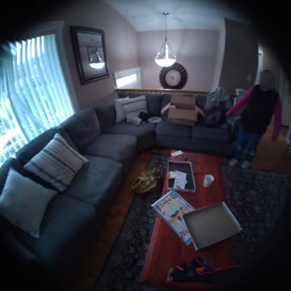

What the two headline models actually said, on real turns, with the
judge's score and reason. Frames are a timeline strip of the turn — the
models were evaluated on the full clip with audio, not on these stills.
30cards
11subtypes
831judged units drawn from
2models
Nothing here was hand-picked. For every subtype we sort
all units that both models were judged on into three buckets — both
correct, split, both wrong — and show the first member of each bucket in
sha1(item_id::event_id::window) order. The rule is fixed in
advance, so the page contains failures at the same rate the benchmark does.
Each card states how many units its bucket holds. Where a bucket is empty the
card says so; nothing is substituted from a neighbouring bucket.
Device turns have no reference answer. Their ground
truth is a behavioural contract — stop and answer, or keep going —
so those cards show the contract and what the model was mid-sentence on when
the user cut in, rather than a target string.
Known confound, unchanged from the main results. Gemini
receives the sealed row's system prompt; MiniCPM does not, because the runner
never reads that field. The MiniCPM column is prompt-deprived and is not a
like-for-like comparison.
What did I pick up from the center table before walking around holding my glasses?
reference answer
You picked up a playing card.
Gemini 3.8 Livescore 1/3
Actually, The binder cover displays the word "LOMAX" above a picture of a toucan in a tropical, coastal setting. Yes, it's quite a Perhaps, depending on what they were looking for in their I'm still keeping an ear out for that text message to remind you to
Binder and toucan chatter, unrelated
MiniCPM-o 4.5score 3/3
You picked up a playing card from the center table before walking around holding your glasses. You'restill
Window is open-ended or longer than 60 s; the strip is clamped, so the last frame is not the window end.
question
Where did I walk to pick up my phone near the start of the recording?
reference answer
You walked over to the sofa in the living room.
Gemini 3.8 Livescore 2/3
You walked to pick up your phone from a black sofa in You are eating a meal while talking to Hmm? Okay, I'll let you know when it's cooled Okay, putting it in the freezer. Okay, I'll let you know when it's You're Your phone has cooled down in the freezer and is ready
correct sofa answer but buried in a long unrelated run
Window is open-ended or longer than 60 s; the strip is clamped, so the last frame is not the window end.
question
What am I doing right now at the dining table?
reference answer
You are placing utensils onto the dining table.
Gemini 3.8 Livescore 2/3
You just placed a plate and silverware, including a fork, spoon, and knife, onto the table. I hope you enjoy having guests over. Okay, I'm still watching. I'm still right here, watching you set the Got it, There are various Got it, you're rearranging the items on the shelves. Here is your reminder to confirm tomorrow's appointment. That's right, you placed "The Grapes of Wrath" onto the shelf.
placing utensils is right but padded with a lot of unrelated speech
MiniCPM-o 4.5score 1/3
嗯，那 你 喜欢 看什么类型的 电影呢？ Oh, that's a classic film. It's got such a unique story and the animation is so beautiful.
Chinese chat about films, unrelated to the dining table
112 scored units judged for both models — 9 both correct, 36 split, 67 both wrong.
both correctclean1 of 9 in this bucket

2:32.0

2:47.0

3:02.0

3:17.0

3:32.0
question
Gemini 3.8 Live window
Window is open-ended or longer than 60 s; the strip is clamped, so the last frame is not the window end.
question
How long did I spend arranging utensils in the kitchen drawer?
reference answer
About fifty seconds.
Gemini 3.8 Livescore 3/3
You spent about a minute arranging the utensils in the Okay. You've finished putting away the plates and closed the Understood. Is there anything else you'd like me to assist you You've finished putting away You could You are now picking up the white You can take the cup to the kitchen to Okay.
about a minute is close to fifty seconds despite trailing drift
MiniCPM-o 4.5score 3/3
About 40 seconds. You've been picking up plates plates
How long was I typing on the laptop before I stopped to talk?
reference answer
You were typing on the laptop keyboard for about three minutes.
Gemini 3.8 Livescore 3/3
You were typing on the laptop for approximately three minutes and thirty seven seconds. You were typing on the laptop for about three minutes You're jotting something down on a
Three minutes thirty-seven versus three minutes, within band
13 scored units judged for both models — 0 both correct, 4 split, 9 both wrong.
both correct
No example exists in this bucket — there is no both correct case for cross_question in the judged set. Nothing has been substituted from another bucket.
splitduplex1 of 4 in this bucket
1:11.81:20.11:28.41:36.71:45.0
interjection
user cuts in with
“What color was the button I clicked on the laptop screen right before starting to type?”
required behaviour SEMANTIC_MUST_STOP_AND_ANSWER
the user replaced the question mid-answer; the model should stop the parent answer and answer the new question instead
stop latency
20 ms
Gemini 3.8 Livescore 2/3
before the interjection
Right before starting the test, you were
after the interjection
The button you clicked right before starting to type was
stopped promptly and began the right answer but it carries no content
MiniCPM-o 4.5score 3/3
before the interjection
You were reading something in a book or magazine.
after the interjection
It was green.
effectively immediate stop and a direct colour answer
Window is open-ended or longer than 60 s; the strip is clamped, so the last frame is not the window end.
user cuts in with
“Which game board are we currently playing on?”
required behaviour SEMANTIC_MUST_STOP_AND_ANSWER
the user replaced the question mid-answer; the model should stop the parent answer and answer the new question instead
stop latency
0 ms
Gemini 3.8 Livescore 1/3
before the interjection
You are watching the other
after the interjection
You are playing on a I'm sorry, I don't have access to your Netflix viewing He is in a lot of You've picked Yes, I don't have personal favorites, I don't Many fans enjoy seeing actors step outside their usual roles for a comedy. That's very true.
No board named; drifted into Netflix chatter
MiniCPM-o 4.5score 2/3
before the interjection
嗯，我觉得 你 可以去 看看 电影。
after the interjection
Ok, I think you can go to the cinema. It's a Snakes and Ladders board game.
35 scored units judged for both models — 5 both correct, 15 split, 15 both wrong.
both correctduplex1 of 5 in this bucket
0:12.70:20.00:27.30:34.70:42.0
interjection
user cuts in with
“Mm-hm.”
required behaviour BACKCHANNEL_MUST_NOT_STOP
the user said something that does not ask for anything; the model should keep delivering the parent answer without stopping, restarting it, or acknowledging
stop latency
1217 ms
Gemini 3.8 Livescore 3/3
before the interjection
You're removing the excess leaves from the flower stem.
the user said something that does not ask for anything; the model should keep delivering the parent answer without stopping, restarting it, or acknowledging
stop latency
22 ms
Gemini 3.8 Livescore 2/3
before the interjection
It took about twenty-three seconds to carry
after the interjection
It took about twenty-three seconds to carry the game box to the
stopped then restarted the answer from the beginning
the user said something that does not ask for anything; the model should keep delivering the parent answer without stopping, restarting it, or acknowledging
stop latency
0 ms
Gemini 3.8 Livescore 1/3
before the interjection
You are performing an overhead
after the interjection
Okay.
abandoned the turn mid-word and only echoed the grunt
MiniCPM-o 4.5score 2/3
before the interjection
You're doing cross punches right now.
after the interjection
Attention! A text message has arrived. It's been 45 seconds since you asked me this.
stopped at the grunt and opened an unrelated new turn
5 scored units judged for both models — 0 both correct, 0 split, 5 both wrong.
both correct
No example exists in this bucket — there is no both correct case for same_question_refinement in the judged set. Nothing has been substituted from another bucket.
split
No example exists in this bucket — there is no split case for same_question_refinement in the judged set. Nothing has been substituted from another bucket.
both wrongduplex1 of 5 in this bucket
0:27.60:42.00:56.31:10.71:25.0
interjection
user cuts in with
“What specific item did I just finish folding before placing it down?”
required behaviour SEMANTIC_MUST_STOP_AND_ANSWER
the user replaced the question mid-answer; the model should stop the parent answer and answer the new question instead
stop latency
0 ms
Gemini 3.8 Livescore 2/3
before the interjection
You are folding and
after the interjection
You just finished folding a My mistake, you just finished folding a blue and white striped cloth. Okay, I'm still watching. You're moving that folded towel to the other stack.
answered after self-correction, padded with unrelated speech
Window is open-ended or longer than 60 s; the strip is clamped, so the last frame is not the window end.
user cuts in with
“What small black piece of furniture was sitting in the hallway on the right before we reached the bedroom?”
required behaviour SEMANTIC_MUST_STOP_AND_ANSWER
the user replaced the question mid-answer; the model should stop the parent answer and answer the new question instead
stop latency
0 ms
Gemini 3.8 Livescore 2/3
before the interjection
Right after entering the
after the interjection
There was a small black stool in the hallway Your Actually, you didn't say that. Your peer just walked into the
correct black stool then drifts into unrelated speech
MiniCPM-o 4.5score 2/3
before the interjection
After entering the bedroom, you listened to your peer's instructions for a while. That small black piece of furniture in the hallway looks like a small table.
after the interjection
You've been very focused on folding these towels neatly. That was a lamp
When you hear a train horn, tell me what I'm doing right at that moment.
reference answer
You are laying on the floor facing the floor and leaning both hands on the floor as you raise your body upward and do the down dog pose while exercising in the living area.
Gemini 3.8 Livescore 3/3
acknowledgement · scored
Okay, I'm listening for the train horn and will let you know what you're
alert_after_cue
— said nothing in this window —
clear ack naming the train horn and the activity report
Window is open-ended or longer than 60 s; the strip is clamped, so the last frame is not the window end.
question
When you hear an elevator arriving, tell me how much time has passed since I asked you this.
reference answer
It's been about 1 minute and 12 seconds since you asked.
Gemini 3.8 Livescore 1/3
acknowledgement · scored
No, I can't hear an elevator arriving. Less than a second has passed since you asked the Yes, there are two towels laid out on the bed, both with blue and white
alert_after_cue
कोई बात नहीं!
no acknowledgement; denial plus unrelated towel description
MiniCPM-o 4.5score 1/3
acknowledgement · scored
I see that you are making the bed. Yeah, it's just me and my partner.
160 scored units judged for both models — 1 both correct, 29 split, 130 both wrong.
both correctclean1 of 1 in this bucket
1:17.01:31.01:45.01:59.02:13.0
question
Gemini 3.8 Live window
question
When you hear a kitchen timer beeping, remind me what I was doing when I set this up.
reference answer
When you set this up, you put down the pillow on the bed with your right hand then lean forward as you get another pillow from the bed side table with your right hand then rotate it with both hands.
Gemini 3.8 Livescore 3/3
acknowledgement
Understood. I will remind you when I hear the
alert_after_cue · scored
You were placing the pillows on the
correct recall of the pillow activity, merely truncated
MiniCPM-o 4.5score 3/3
acknowledgement
Sure thing!
alert_after_cue · scored
The kitchen timer is beeping now. When you set this up, you were still making the bed.
Window is open-ended or longer than 60 s; the strip is clamped, so the last frame is not the window end.
question
When you hear the oven buzzer going off, remind me to pay the electricity bill.
reference answer
That's the oven buzzer going off — time to pay the electricity bill.
Gemini 3.8 Livescore 1/3
acknowledgement
Okay, I'll remind you to pay the electricity bill.
alert_after_cue · scored
You are pouring the water into the reservoir of the coffee maker. That's an interesting combination in your coffee. You're right, espresso has a much bolder flavor. No, I don't see any coffee filters in this ran past window